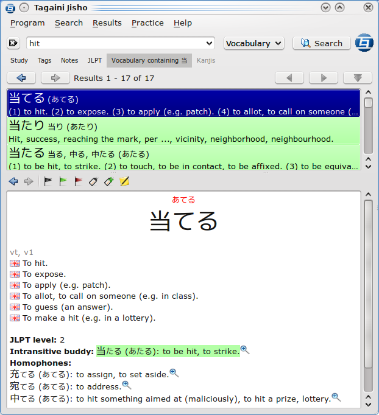
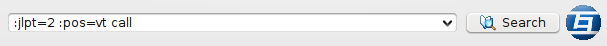
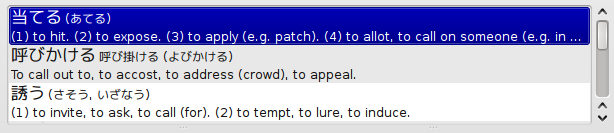
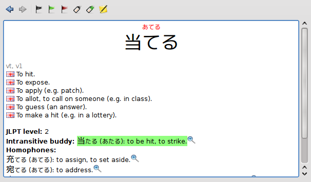
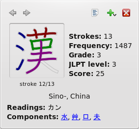
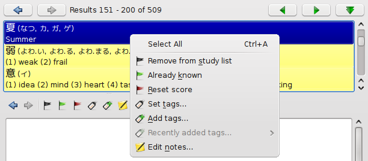
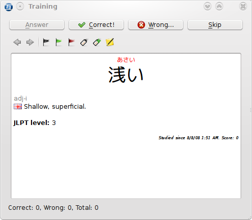
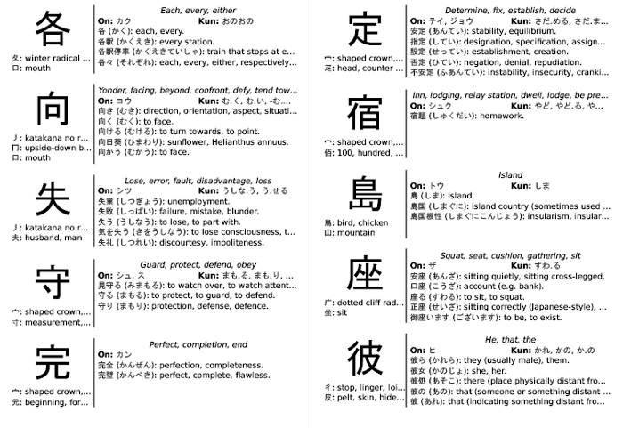

Here is a short manual on how to use Tagaini Jisho. Instructions in this manual apply to version 0.2.2.
The main window follows a simple design, with a search bar, a results view and a detailed view (from top to bottom), that is able to display both dictionary entries and kanjis.


The search bar is where you can enter terms (in English or Japanese) to look for. Just enter the text to look up and click the Search button (or press Enter)
to perform a search. When a search is being performed, the icon at the
right of the window animates. Clicking it allows you to cancel the
ongoing
search in case it takes too much time.
Looking up words and kanjis is pretty easy, as Tagaini is designed to correctly guess what you are looking for from your input. Just type in the words that you are looking for, in English or Japanese (kanas or kanjis). Results that match all the words are then displayed. You can mix words in Japanese and English - in that case, you will get results where both the Japanese word and English definition match. For instance, if you enter しけん, you will get definitions for both 試験 (test) and 私見 (personal opinion). However, if you enter しけん test, only the first definition will show up.
Entering a single character kanji will not only return words that are written using this kanji alone, but also detailed information for that kanji. For instance, if you search for 駅, you will have two different results: one for the word 駅 (えき), which means station, and another for the 駅 kanji, with information about meanings, readings, radicals, and a link to list all the words that use it.
You can use the asterisk (*) character at the end of a word to indicate "all the words that start with...". Entering せん* will display all the entries which Japanese reading starts with せん.
Finally, you can look for a strict sequence of words by enclosing
them within double quotes ("). This is useful for looking after precise
definitions. For instance, if you look for to run,
you will get all words which definition include the words "to" and
"run" in any particular order, which will produce a huge result set and
is probably not what you want. Entering to run,
on the other hand, will only display entries which definition contains
these two words in that order, which is more appropriate if you are
looking for that verb definition.
By default, both matching vocabulary and kanji entries are displayed.
This behavior can be changed using the combo box right after the text
entry.
At the bottom of the search bar, you probably noticed these little buttons:
They are search bar extenders, and clicking them pops-up an
additional widget that let you perform searches using parameters other
than text search. In addition, the text button reflects their status
when they are closed.
The results view is where your search results appear in concise form so that you can review them quickly. Clicking on a result displays it into the detailed view.

By default, results are displayed by pages of 50. This can be changed in the preferences. Use the Next page/Previous page buttons to navigate between pages, or click Show all to display all results at once. This last operation can take some time for queries with many results - however, you can navigate within the set of already displayed results while the remaining ones are being fetched. Also, don't forget that you can stop it by clicking on the animated icon of the search bar or running a new query.
The results view allows you to quickly overview the result of a query and to apply a first eye-filter to it. However, when you find an entry that looks like what you are looking for, click it to see its full description in the detailed view. For vocabulary entries, you get a detailed list of the readings and writings of the word, plus a list of definitions with their corresponding part-of-speech, these gray abbreviations on top of definitions. You can click on one of them to get its full definition.

In addition, you will also get interesting information about related entries, that may help you with memorization. For transitive or intransitive verbs, Tagaini will automatically try to fetch and display the counterpart of the verb (like 上がる/上げる), and homophones. You can use the icon at the right of the definition and the left/right arrow buttons in the detailed view tool bar to navigate between entries. For kanjis, you will get a list of kanjis that embed it, as well as some words that use it.
In the detailed view, all kanjis are clickable. Clicking a kanji will raise a popup window with general information, meanings, radicals, and an animation of its stroke.

The study list is a simple, yet efficient way to discriminate between entries you don't have any clue about and entries you think should stay in your mind. When you see an entry for the first time, you may have one of these three reactions: I don't care about it, I want to study it, or I already know it.
For the first case, there is nothing to do. However for the second and third ones, you may want to select the entry in the result view and right-click to display the entry's menu, and choose the corresponding menu option to add the entry to your study list. You can also use the buttons on top of the detailed view for entries displayed there.

You probably noticed that the background color of the entry in the results view has changed as you added it to your study list. Every entry in your list has a score ranging from 0 to 100 assigned to it, and its background color depends on it. This score illustrates your level of mastery of the entry. A score of 0 (the default when you choose "Add to study list" means you barely discovered this word/kanji but want to remember it. On the other hand, a score of 90 or more (the default when you choose "Already known" indicates that you perfectly remember it. The background of a studied entry is fully red when its score is zero, but turns to yellow and finally green as its score increases.
Once an entry is in your study list, Tagaini will ensure that you get reminded about it, especially for entries with a low score. Therefore, correctly marking all the entries you know and need to study can make a difference when it comes to remember them. First, it affects the sorting of results: studied entries always appear on the top of the results list, with the lowest-score entries first. Also, it influences the contextual information you get about an entry. Such contextual information is not yet implemented, but future versions will display things like a list of vocabulary you know that uses a newly-studied kanji, or suggest kanjis that are only made of kanjis you already know. Finally, it allows you to quantify your progresses. Do a Search -> Studied entries -> All and see all the vocabulary in your head along with their scores!
Score is therefore an important component to quantify your progresses, but right now we just know how to initially set it to 0 or 90. How can we make it evolve after that?
Training is an important part of the workflow of a Tagaini user. Inspired by spaced repetition, it features a flashcard-like practice that either displays the Japanese version or the translation of a dictionary entry (or kanji and meaning for kanji entries) and challenges you to remember the other part.

Click Answer to check whether your thought was correct or not, and then click the Correct or Wrong button to update the entry accordingly. If you responded correctly, its score will increase, otherwise it will decrease provided it is not already 0. Note that the entry's menu is only usable and kanjis are only clickable when the answer is displayed.
Training always works on the whole set of your studied entries, but uses a probabilistic algorithm that makes lowest-score entries appear much more frequently than highest-score ones. Therefore, you should be displayed with entries you already know only very occasionally - and this is a good way to check you did not forget them. To avoid influencing the score with your short-term memory, entries are only displayed once a day. Therefore, if an entry has already been trained today, it will not appear again before tomorrow no matter whether you replied correctly or not.
Had fun training? Have you noticed how correctly marking the entries you know influences the way results are presented to you? Well, there are other ways to help you organize and remember them.
All the greatness of Web 2.0 for your Japanese study! Bullshit apart, tags can be a great thing when used correctly, as they allow you to group entries according to your logic, and not some arbitrarily-decided similarity. Use and abuse them to tag your studied entries by similarity of meaning, pronunciation, idea group, kanji shape, whatever. Tagging an entry is possible through the results view right-click menu and the training window.
Notes, on the other hand, let you complete an entry with your own thoughs. Generally, they will be about particular usage notes and special forms that are not displayed in the dictionary entry or are not obvious. For kanjis, you can also list kanjis that look similar to you. As for tagging, notes are available from the results view right click menu and the training window. You can have several notes associated to an entry: to add one, click New note, then select the note that has been created and type in your thoughts in the lower part of the window. Don't forget to click Apply before closing the window, otherwise your notes won't be saved.
Saved notes appear as a post-it like frame in the detailed view of an entry. Entries do not need to be in your study list to be tagged or annotated.
Unfortunately, you cannot bring Tagaini everywhere with you. However, the printing option gives you a possibility to continue studying even when you do not have a computer around.

As of now, there is only one, quick, and dirty printing option: The booklet from the displayed results in the File menu. It will print a foldable booklet inspired by the Pocketmod on a single standard sheet on paper. To fold it, follow the instructions of the following video:
A typical usage is to select entries which you mitaken during training using one of the options in Search -> Mistaken, to print a booklet out of them, and study them while you are commuting. Right now the printed material is still very concise and ugly, but it will get better in future versions.
This option in Results -> Export allows you to export entries displayed in the results list into a format that you can easily import into another software. It has been initially designed for Anki, but will work with any software that supports importing items in that format. To import your exported entries into Anki, select Deck -> Import, then ensure the type of file is set to TAB/semicolon separated file and the model to Japanese. Choose your file, tick Tag facts with duplicate fields instead of deleting, and map the fields as follows:
Finally, click import. You can now train the exported entries from Anki.
You should now know everything you need in order to start using Tagaini Jisho efficiently. Please don't forget that this is still an early version - check the website regularly to see when updates are available. Also, feel free to submit your suggestions and report bugs to the Launchpad interface. Have fun with Tagaini Jisho!